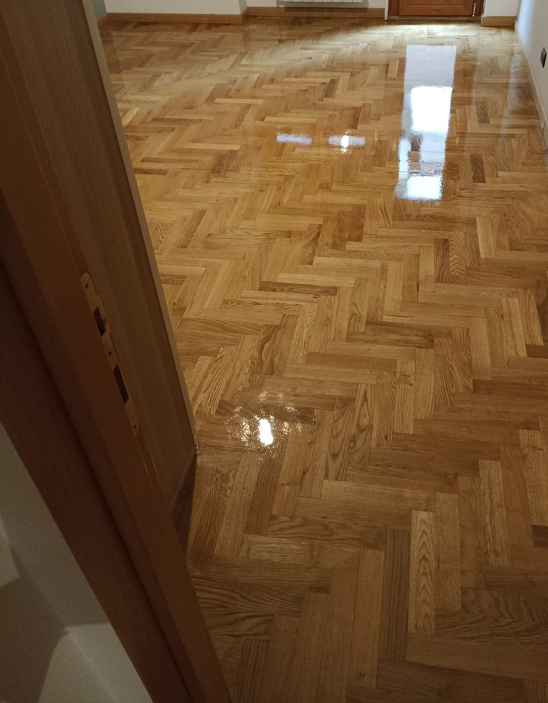

Fornitura parquet
Selezione di parquet prefiniti, masselli e soluzioni personalizzate per abitazioni, uffici e attività commerciali.
Fornitura e posa parquet | Scale - Laminati
Ristrutturazione Parquet
Infissi e Porte interne
Realizziamo progetti su misura per abitazioni e spazi professionali, seguendo ogni fase con cura: dalla consulenza iniziale alla scelta dei materiali, fino alla posa e alla manutenzione nel tempo. Ogni intervento e pensato per unire estetica, durata e comfort quotidiano.
Selezione di parquet prefiniti, masselli e soluzioni personalizzate per abitazioni, uffici e attività commerciali.
Installazione precisa con tecniche tradizionali e moderne per un risultato durevole e di pregio.
Recuperiamo pavimenti esistenti con levigatura, verniciatura e trattamenti protettivi su misura.
Soluzioni resistenti all'umidità e all'usura, ideali per ambienti ad alto passaggio e ristrutturazioni veloci.
Ti aiutiamo nella scelta del prodotto più adatto in base a stile, uso degli spazi e budget, con supporto in ogni fase.

"Professionalità, precisione e ottimo risultato finale. Consigliatissimo!"
"Lavoro pulito e tempi rispettati. Il parquet ha trasformato la casa."
"Ottima consulenza nella scelta del materiale, risultato elegante e tempi rapidi."
Professional Parquet di Giuseppe Colangelo
C/DA Iscalunga snc, Filiano (PZ), Italia
Telefono: +39 349 613 2483